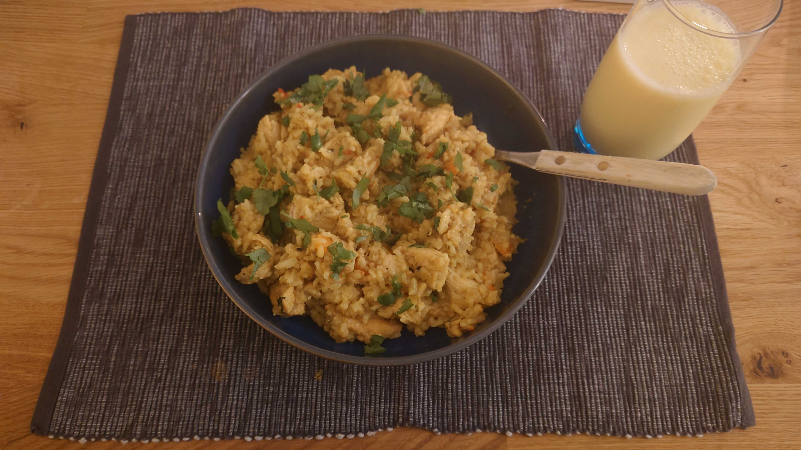

Chicken-Banana-Curry 🍛

Beschreibung
Dieses Curry kombiniert zartes Haehnchen mit Kokosmilch, milder Curryschaerfe und einer leichten Bananensuesse. Das Ergebnis ist cremig, ausgewogen und alltagstauglich. Perfekt mit Basmatireis und etwas frischem Koriander.
Zutaten 🛒
- 500 g Haehnchenbrust
- 1 Zwiebel
- 2 Knoblauchzehen
- 1 EL Ingwer, fein gehackt
- 1 EL Currypulver
- 1 TL Kurkuma
- 400 ml Kokosmilch
- 1 Banane, in Scheiben
- 1 EL Limettensaft
- 2 EL Oel
- Salz und Pfeffer
- Basmatireis als Beilage
Zubereitung 👨🍳
- Vorbereitung: Haehnchen in mundgerechte Stuecke schneiden. Zwiebel, Knoblauch und Ingwer fein hacken.
- Anbraten: Oel in einer tiefen Pfanne erhitzen. Haehnchen rundum goldbraun anbraten und herausnehmen.
- Basis bauen: Zwiebel, Knoblauch und Ingwer in derselben Pfanne glasig anschwitzen.
- Gewuerze: Currypulver und Kurkuma einruehren, kurz roesten bis es duftet.
- Sauce: Kokosmilch angiessen, Haehnchen zurueckgeben und 12 bis 15 Minuten bei mittlerer Hitze koecheln lassen.
- Banane: Bananenscheiben und Limettensaft in den letzten 3 Minuten unterheben.
- Finale: Mit Salz und Pfeffer abschmecken und mit Reis servieren.
Tipps & Tricks 💡
- Schaerfe: Fuer mehr Kick etwas Chili oder Sambal Oelek dazugeben.
- Meal Prep: Das Curry schmeckt am naechsten Tag oft noch aromatischer.
- Gemuese-Boost: Paprika oder Zucchini passen sehr gut dazu.
- Bananenmenge: Mit einer halben Banane starten, wenn du es weniger suess magst.